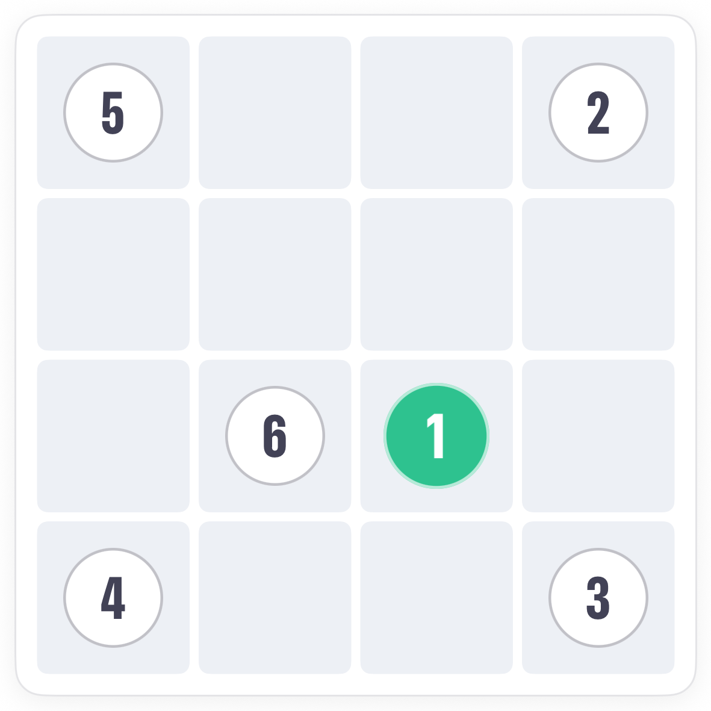
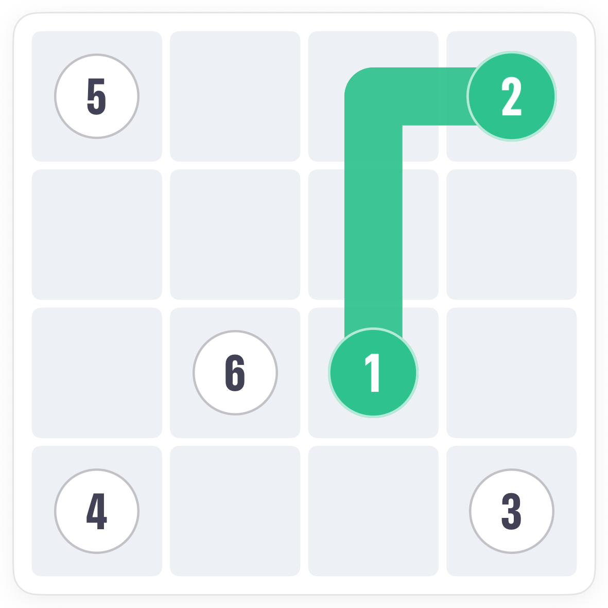
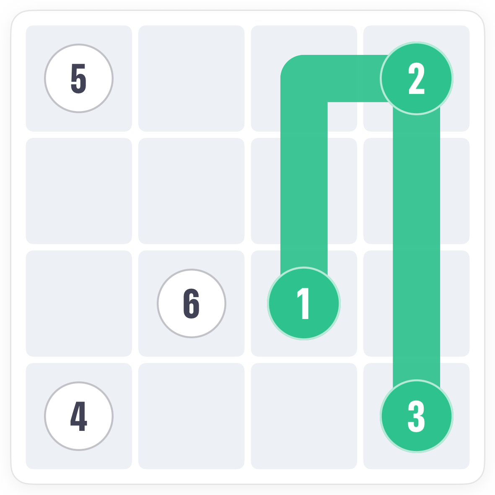
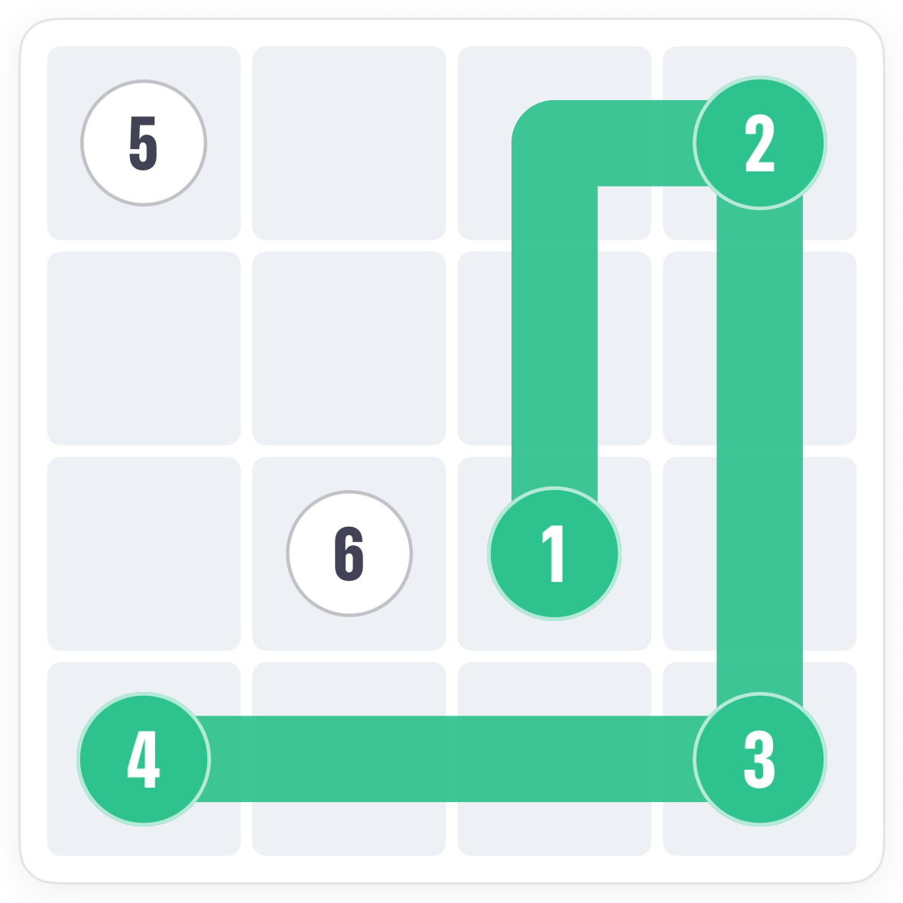
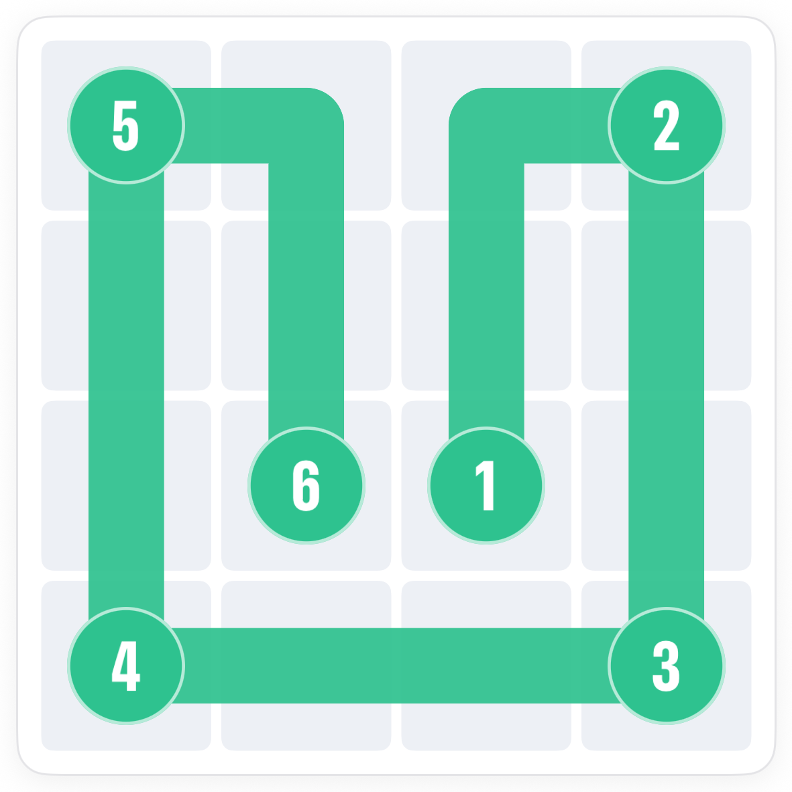

How to play Slink.
Slink asks for one unbroken trail that covers every square of the grid and passes the numbered squares in order. The trick is to look before you draw: the corners tell you where the trail has to go.
The board.
A grid, here 4 by 4, with numbered squares. The trail starts at 1, must visit 2, then 3, and so on, and must end on the highest number. Every square on the board has to be covered.

The rule.
Slide your finger from 1 across neighbouring squares to draw. Slide back off the tip to rewind, or tap an earlier part of your trail to jump back to it.
Reading the board.
Before drawing, find the squares with the fewest ways in and out. A corner square has two neighbours, so the trail must enter by one and leave by the other. Numbers near corners settle the route.




Common questions.
Can the trail cross itself?
No. Each square is visited once, so the trail never crosses or touches its own earlier part.
I reached the last number but squares are left. What now?
Rewind. Reaching the end early means an earlier turn was too direct. Slide back off the tip or tap the trail where you want to resume, and take the longer way round.